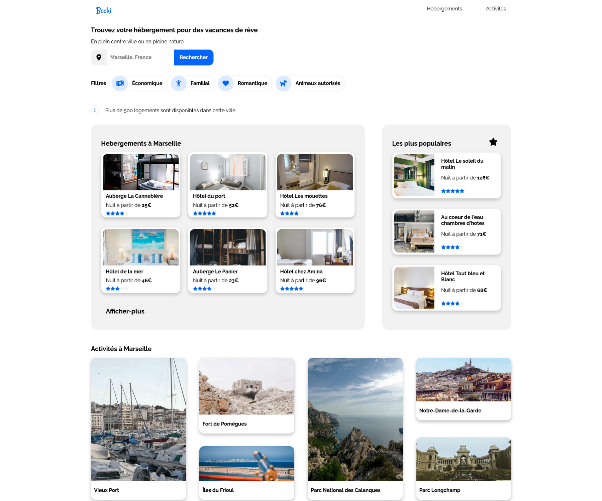
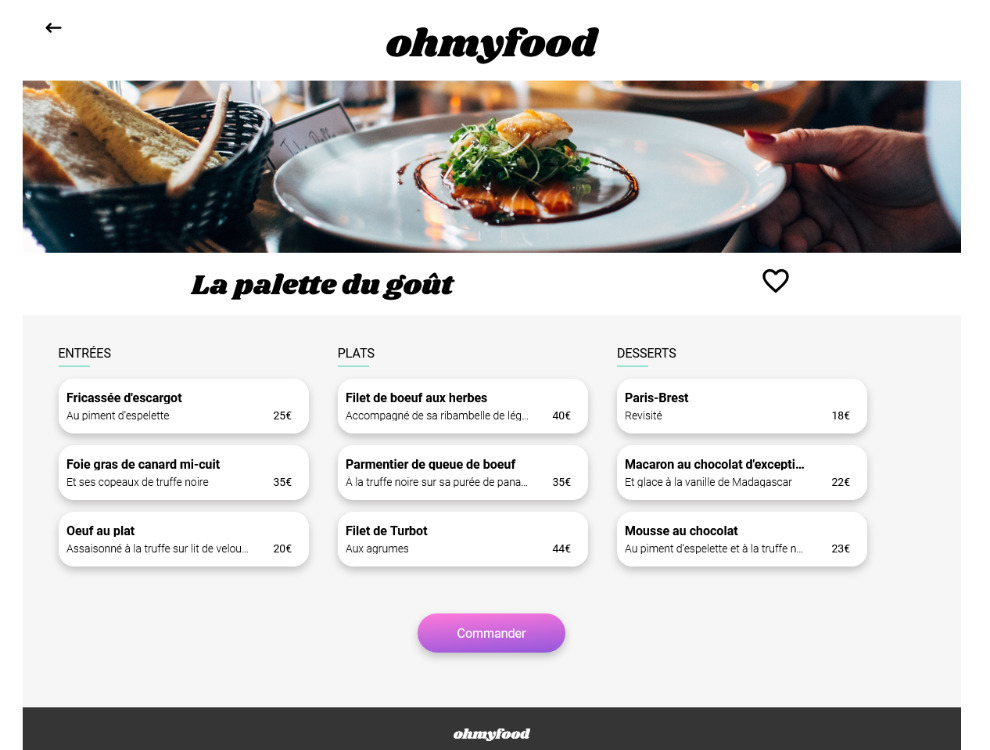
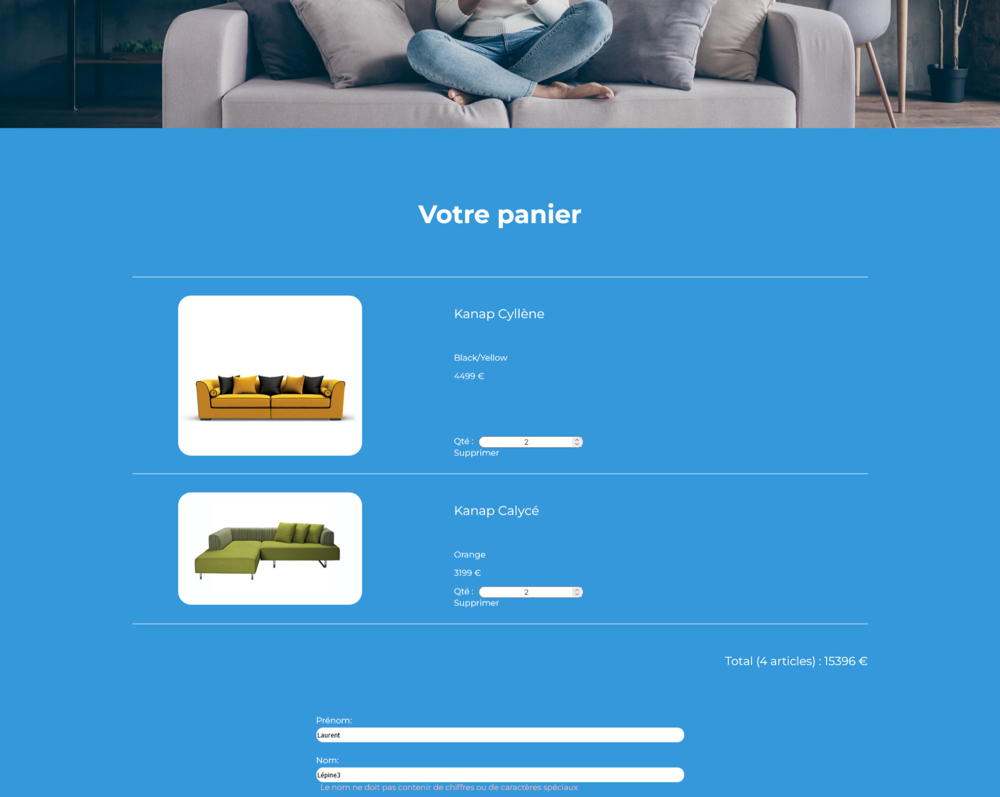
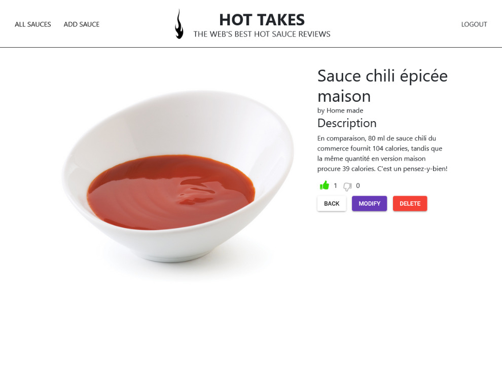
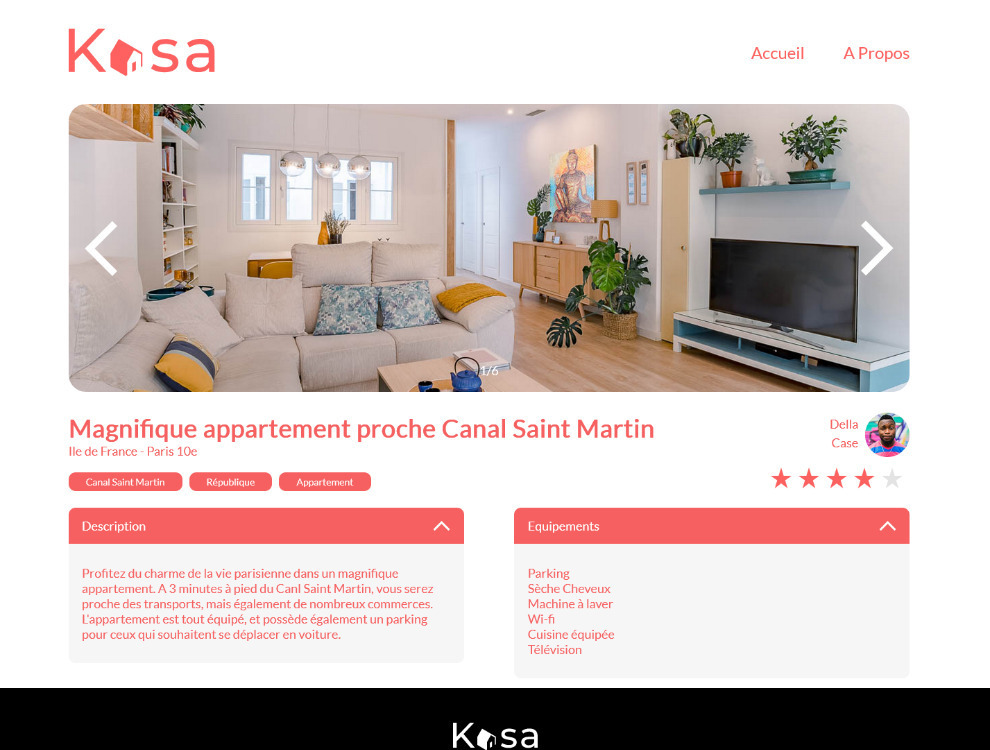

Réalisations


Transformez une maquette en site web responsive
- Implémenter une interface responsive
- Intégrer du contenu conformément à une maquette

Dynamiser des pages web avec des animations CSS
- Utiliser un système de gestion de versions (Git)
- Assurer la cohérence graphique d'un site web
- Mettre en place une structure de navigation pour un site web
- Mettre en place son environnement Front-End
- Mettre en œuvre des effets CSS graphiques avancés

Optimiser un site existant
- Optimiser la taille et la vitesse d’un site web
- Recherche des bonnes pratiques en développement web
- Écrire un code HTML et CSS maintenable
- Assurer l'accessibilité d'un site web
- Optimiser le référencement d'un site web

Site e-commerce en JavaScript
- Gérer des événements JavaScript
- Interagir avec un web service avec JavaScript
- Valider des données issues de sources externes
- Créer un plan de test pour une application

API sécurisée pour une application d'avis gastronomiques
- Mettre en œuvre des opérations CRUD de manière sécurisée
- Stocker des données de manière sécurisée

Application web de location immobilière avec React
- Initialiser une application avec Create React App
- Interface d'un site web avec des composants React
- Navigation entre les pages de l'application avec React Router